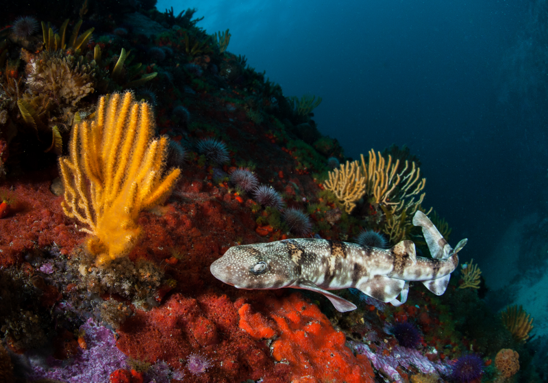
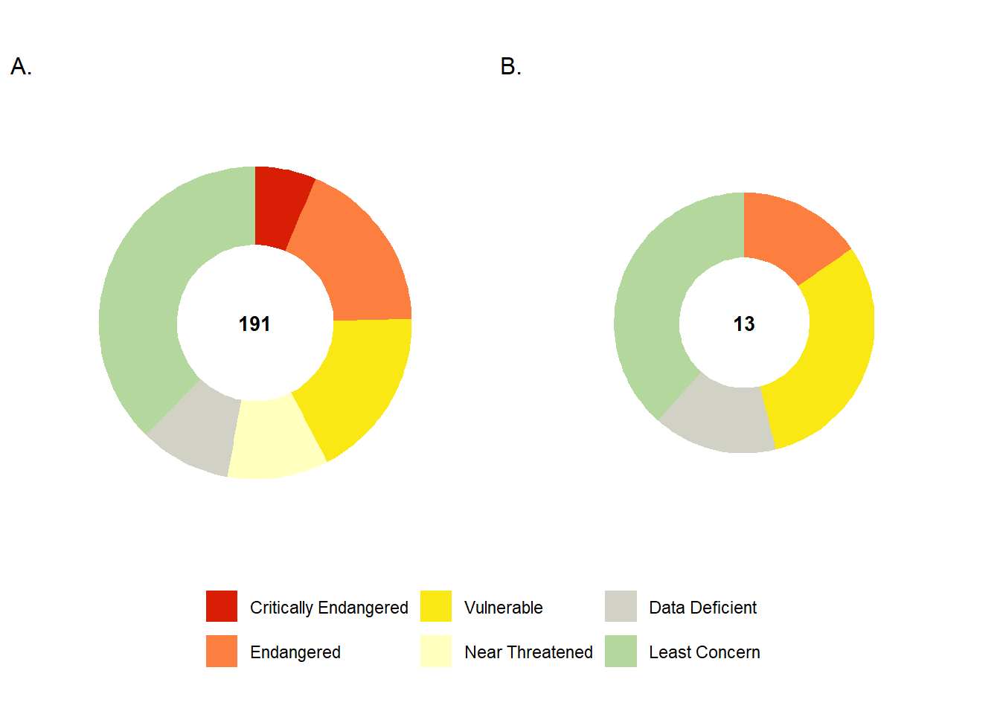
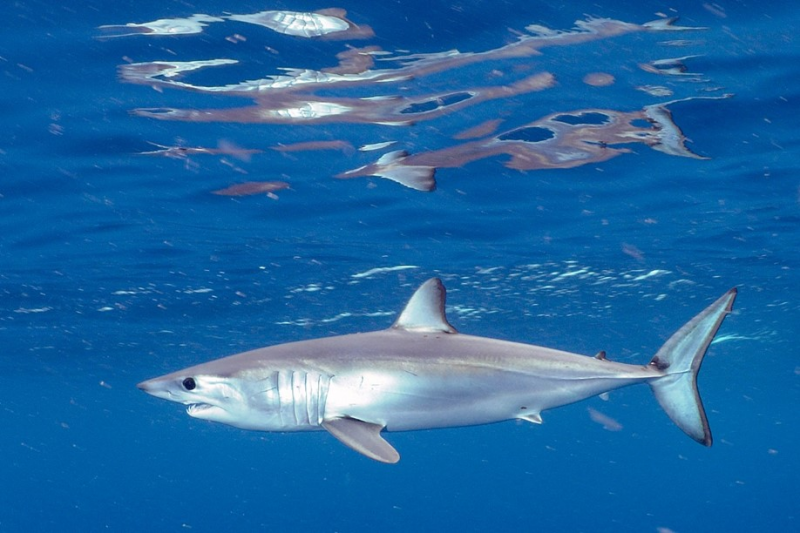
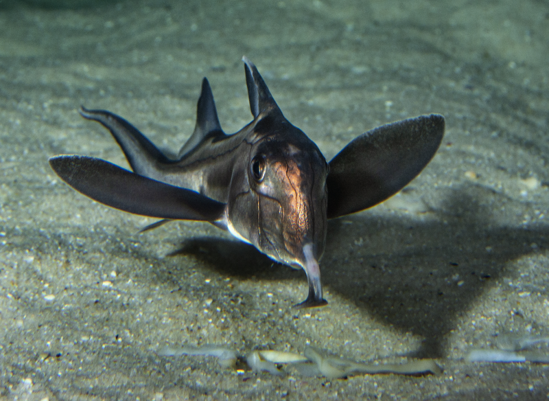
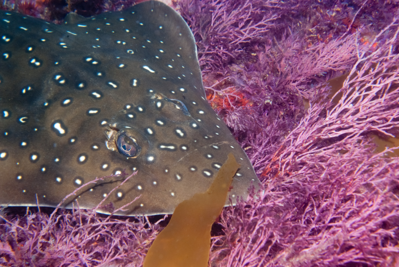
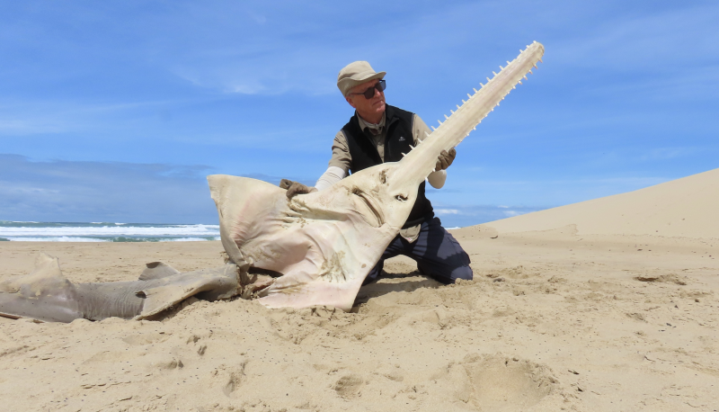

![]()


43%
of 191 species assessed are
Threatened
of 191 species assessed are
Threatened
7%
of 191 species assessed are
Endemic
of 191 species assessed are
Endemic
Key findings
In the current assessment, 191 species of sharks, rays and chimaeras have been assessed, with 13 of these species endemic to South Africa.
Forty-three percent (82 species) of these 191 species are assessed as threatened with extinction, with another 10% (20 species) assessed as Near Threatened.
Six of South Africa’s 13 endemic sharks are threatened with extinction, placing full responsibility for their protection in South Africa.
Sharks have been included in the South African Red List Index (RLI) for the first time, and this group is considered the most threatened marine taxonomic group in South Africa, with the lowest RLI score, indicating high levels of threat and decline.
The main threats to sharks are fisheries, primarily as targeted catch and bycatch in commercial fisheries targeting more productive species. Habitat loss and degradation are also identified as a threat to several species with small geographic ranges in nearshore and coastal habitats (including endemic species). Climate and oceanographic changes are likely driving habitat loss and range shifts for some species.
Overview of diversity
Sharks, rays and chimaeras (hereafter ‘sharks’) are members of the diverse class of cartilaginous fishes that includes the sharks, rays, skates, sawfishes and chimaeras (or ghost sharks).
Threat status
Based on the combination of global and national IUCN Red List of Threatened Species assessments, 82 species (43%) were found to be threatened with extinction (Figure 1, Table 1), including 12 species (6%) listed as Critically Endangered at extremely high risk of extinction), 35 (18%) as Endangered (at very high risk), and 35 (18%) as Vulnerable (at high risk). A further 20 species (10%) are categorised as Near Threatened, while 18 (9%) are classified as Data Deficient (i.e. have insufficient information to determine whether they are threatened or not), so the true number of threatened species could be even higher. 71 species (37%) are categorised as Least Concern. Six (46%) of the 13 endemic species were assessed as threatened. Responsibility for the conservation and recovery of these six species lies in South Africa’s hands.
For the 33 species assessed at the national level, one species is assessed as likely more threatened at the national than global level,11 species are assessed as less threatened at the national than global level (including five species that are globally Threatened but nationally Least Concern), and the remaining 21 species have the same threat status at global and national levels. These results indicate that South Africa’s efforts to manage fisheries for some target and bycatch species are having significant positive impacts, while the overall status assessment (43% of South Africa’s sharks listed as Threatened) shows that much more still needs to be done to prevent extinctions and foster recovery.
| Taxon | Critically Endangered | Endangered | Vulnerable | Near Threatened | Data Deficient | Least Concern | Total |
|---|---|---|---|---|---|---|---|
| Overall sharks | 12 | 35 | 34 | 20 | 18 | 72 | 191 |
| Endemic sharks | 0 | 2 | 4 | 0 | 2 | 5 | 13 |
Trends - the Red List Index
The trend in species status over time was measured using the globally recognised indicator, the IUCN Red List Index of species (RLI)4. The RLI is calculated based on genuine changes in IUCN Red List categories over time. The RLI value ranges from 0 to 1 – the lower the value, the faster the taxonomic group is heading towards extinction (i.e. if the value is 1, all taxa are Least Concern, and if the value is 0, all taxa are Extinct).
The RLI was calculated for all sharks in South African waters (n = 191), using national status assessments where available and global status assessments otherwise. The Shark RLI shows that many of South Africa’s shark species were already threatened in 2005 (Figure 2). The RLI declined further between 2005 and 2020, meaning that South Africa’s shark species continued to move towards extinction.

The declining status of sharks is a global trend, with steeper declines in the global RLI since 1970 than for any other marine taxonomic group except for stony corals5. As most of South Africa’s 191 shark species have ranges that extend well beyond South African waters, some of the decline in the RLI for South Africa’s sharks reflects intense fishing pressure and other threats beyond South Africa’s jurisdiction. When national adjustments in threat status are taken into account, the overall national status of South Africa’s sharks is marginally better than their global status and the decline in the national RLI is marginally less steep than the global RLI for the same set of species (Figure 2). As for the overall threat status, these results indicate that South Africa’s efforts to manage fisheries for some target and bycatch species are having significant positive impacts, but that much more still needs to be done to prevent extinctions and foster recovery.
Pressures
Overfishing is the main threat to sharks globally6 and in South Africa (Figure 3). Overfishing has been identified as a major threat on the IUCN Red List for all of South Africa’s threatened shark species and is the sole major threat identified for two thirds of those species. This includes targeted catch in some commercial fisheries, plus bycatch in commercial fisheries targeting more productive species, recreational fisheries, and lethal shark control measures, and ghost fishing by abandoned fishing gear.
Total catch of sharks across all fisheries is in the order of 1 000 tonnes per annum3. Domestic consumption of shark meat and fins in South Africa is limited – most of the documented catch is exported to markets in Asia and Latin America.
24% of shark species landed in South African fisheries are Critically Endangered or Endangered. Two of these species have estimated annual catches (2013-2023) in excess of 100 tonnes7: soupfin shark (Galeorhinus galeus, CR), shortfin mako (Isurus oxyrinchus, EN). An additional four Endangered species had estimated average annual catches (2013-2023) of 11 tonnes or more7: dusky shark (Carcharhinus obscurus, EN), the endemic twineye skate (Raja ocellifera, EN), white skate (Rostroraja alba, EN), and common smoothhound (Mustelus mustelus, EN) (Table 2). For all six of these species (with the exception of the white skate), overfishing is the sole major threat. Catches are very low for five of the Critically Endangered or Endangered species landed in South African fisheries3.

From 2010 to 2012, approximately two thirds of the reported shark catch in southern Africa was bycatch9. While some bycatch is retained and sold, much unwanted bycatch is discarded at sea. Mortality rates are high for many bycatch species, especially if they are neglected while on deck. Bycatch discarded at sea is effectively unrecorded and unregulated3.
Recreational fisheries continue for some shark species – while fishers may choose catch-and-release, post-release mortality rates are high for some species (e.g., the Critically Endangered scalloped hammerhead (Sphyrna lewini)) due to high capture stress.
The lethal shark control programme in KwaZulu-Natal (KZN) targets large sharks and represents an additional pressure on target and bycatch species. Currently, the programme is responsible for 2.4% of South Africa’s total shark catch3. The lethal shark control programme is the main fishery in South Africa for the Critically Endangered great hammerhead (Sphyrna mokarran) and the Endangered sandbar shark (Carcharhinus plumbeus) and also takes the Critically Endangered scalloped hammerhead (Sphyrna lewini). While some individuals are released alive, some species (such as hammerheads) have high capture stress and are unlikely to survive. See marine pressure page, box on lethal shark control measures

South African fisheries are well developed, with a high degree of industrialisation9. Threats to sharks, rays and chimeras associated with small-scale fisheries are probably lower in South Africa than in some other coastal countries in the region. However, pressure from illegal coastal gillnet fisheries in estuaries and the open sea along the entire South African continental coastline is growing, representing an increasing threat to both legal fisheries and sharks7. In some areas, catches and landings of sharks in illegal gillnets at sea likely exceed landings from legal gillnets7. The illegal gillnet fishery is characterised by exceptionally high bycatch, especially when nets are set in estuaries and other nursery areas7.

Focus on South Africa’s threatened endemic shark species
The main threat identified for the six threatened endemic species is fisheries – two species are subject to target catch effort, while all six are taken as bycatch in fisheries targeting other species (Table 2).
| Species | Fisheries | Habitat loss and degradation | Climate change |
|---|---|---|---|
| Tiger catshark (Halaelurus natalensis, VU) | Bycatch (large and small-scale) in demersal trawl, longline, beach seine, gillnet, and squid fisheries; also caught in recreational line fisheries | Range shift attributed to climate change, likely representing a significant loss of habitat | |
| Happy eddie (Haploblepharus edwardsii, EN) | Bycatch (large and small-scale) including beach seine, gillnet, trawl, recreational and commercial line, rock lobster, and demersal shark longline fisheries | Range shift likely attributable at least partially to climate change, possibly leading to loss of habitat; hatching rate of egg cases is temperature-specific and potentially sensitive to climate change | |
| Brown shyshark (Haploblepharus fuscus, VU) | Bycatch (large and small-scale) in trawl fisheries, and commercial and recreational line fisheries | Housing and urban development | |
| Natal shyshark (Haploblepharus kistnasamyi, VU) | Bycatch (large and small-scale) in demersal trawl and recreational and commercial line fisheries | Commercial and industrial areas, tourism and recreation areas, domestic and urban waste water pollution | |
| Twineye skate (Raja ocellifera, EN) | Bycatch and retained catch (both large and small-scale) including trawl, commercial and recreational line, beach seine, and gillnet | ||
| Flapnose houndshark (Scylliogaleus quecketti, VU) | Targeted catch and bycatch (both large and small-scale) in commercial and sports hook-and-line fisheries | Coastal development and pollution |
Focus on South Africa’s Critically Endangered shark species]
Estimated average annual catches and major fisheries sourced from DFFE (2022, Appendix II); additional notes on major threats in South African waters sourced from Cliff and Olbers (2022)
| Species | Estimated average annual catch 2010-2012 | Estimated average annual catch 2013-2019 | Fisheries | Notes on major threats in South African waters (Cliff and Olbers 2022) |
|---|---|---|---|---|
| Soupfin shark (Galeorhinus galeus, CR) | 101-400 tonnes | 101-200 tonnes | Demersal shark longline, Demersal trawl, Commercial linefishery | Catches are domi ted by the demersal shark longline fishery, the inshore demersal trawl fishery and the commercial linefishery. There is currently limited protective legislation in the form of slot limits which only allow the retention of individuals between 70 and 130 cm. A species-specific ma gement plan is needed. |
| Scalloped hammerhead (Sphyr lewini, CR) | 1-10 tonnes | 1-10 tonnes | Recreatio l linefish, KwaZulu- tal shark control programme, Small pelagic and midwater trawl | The KZN lethal shark control programme is the largest contributor, followed by demersal trawling and prawn trawl fishery. It is also caught in the recreatio l linefishery, but catches are not recorded. It is also suspected catch in the pelagic longline, demersal longline and commercial linefishery. |
| Great hammerhead (Sphyr mokarran, CR) | 1-10 tonnes | <1 tonne | KwaZulu- tal shark control programme | The KZN lethal shark control programme is the only definite contributor. It is suspected catch in the pelagic longline, and commercial and recreatio l line fisheries. |
| Oceanic whitetip shark (Carcharhinus longimanus, CR) | <1 tonne | <1 tonne | Pelagic longline and Small pelagic and midwater trawl | Pelagic longlining is the major component, followed by the small pelagic fishery. Globally, this species has experienced enormous and prolonged fishing pressure and is now rare in many places. |
| Bowmouth guitarfish (Rhi ancylostomus, CR) | It was not listed in estimated catches recorded by DFFE for the period 2010–2012. This species was a bycatch in the now closed KZN prawn trawl fishery on the uThukela Banks and is infrequently caught by the KZN lethal shark control programme and by shore anglers. | |||
| Largetooth sawfish (Pristis pristis, CR) | Previously caught in small numbers by recreatio l anglers and in the KZN lethal shark control programme, and probably by illegal gillnets. No recently reported local catches; the last known sawfish catch occurred in the KZN lethal shark control programme in 1999. | |||
| Green sawfish (Pristis zijsron, CR) | Previously caught in small numbers by recreatio l anglers and in the KZN lethal shark control programme, and probably by illegal gillnets. No recently reported local catches; the last known sawfish catch occurred in the KwaZulu- tal shark control programme in 1999. | |||
| Ornate eagle ray (Aetomylaeus vespertilio, CR) | First confirmed in South Africa in 2018. No recorded catches in South Africa. | |||
| Shorttail nurse shark (Pseudoginglymostoma brevicaudatum, CR) | First recorded in South Africa in 2020. No recorded catches in South Africa. It has experienced heavy fishing pressure elsewhere in its range and loss of coral reef habitat. | |||
| Spinetail devil ray (Mobula mobular, CR) | 1-10 tonnes for Mobula spp. | 1-10 tonnes for Mobula spp. | KwaZulu- tal shark control programme and Pelagic longline fishery | This species is rare in South African waters and hard to distinguish from conspecifics. The KZN lethal shark control programme is the major contributor to catches in South African waters. |
| Bentfin devil ray (Mobula thurstoni, CR) | This species is rare in South African waters and hard to distinguish from conspecifics. The KZN lethal shark control programme is the major contributor to catches in South African waters. | |||
| Sicklefin devil ray (Mobula tarapaca , CR) | This species appears to be uncommon in South African waters and is hard to distinguish from conspecifics. The KZN lethal shark control programme is probably the major contributor to catches in South African waters. |
Addressing Pressures
There are essentially two types of measures for addressing pressures on sharks:
- spatial management measures (e.g., marine protected areas (MPAs), other effective area-based measures (OECMs), and other special protection measures designed to safeguard sharks and their habitat within a delineated space);
- fisheries-wide measures, usually applied to all vessels or permit-holders within a particular fleet (e.g., entry permits, catch limits, size limits, gear restrictions, catch-and-release protocols).
Both types of measures are needed to safeguard sharks and ensure sustainable fisheries, and both types of measures require monitoring and enforcement to be effective.
South Africa has made significant progress in addressing threats to sharks, including through the following measures:
Data collection and analysis:
- Fisheries-independent surveys, catch and effort data collection in various fisheries, analysis of population trends and distribution patterns for selected species, stock assessments for a small number of species.
Spatial:
- Network of coastal and offshore MPAs – while designed to safeguard a broader set of biodiversity, some of these are located in sites where they can safeguard sharks and important habitat for sharks.

Fisheries-wide:
- Prohibition of nine threatened species in commercial and/or recreational fisheries,
- The demersal hake trawl fishery has ringfenced its footprint,
- Permit conditions that penalise vessels with high bycatch,
- Size limits in the demersal shark longline fishery,
- Daily bag limits in recreational fisheries,
- Shift from large-mesh gillnets to more selective baited drumlines (i.e. baited hooks suspended from buoys [drums] anchored to the seabed) in lethal shark control programmes and removal of gillnets from most beaches during the winter months to reduce bycatch of predators associated with the sardine run and prevent entanglement of whales,
Nevertheless, the persistent high proportion of South Africa’s shark species that are Critically Endangered or Endangered (47 species, 25%) and the declining trend in the RLI for South African sharks indicate that the measures need to be expanded, strengthened, or improved.
Spatial measures
Sharks need a refuge from fishing pressure. Marine protected areas (MPAs) and other effective area-based conservation measures (OECMs) can play an important role in safeguarding nursery grounds and other essential habitats. Existing MPAs that safeguard important shark habitat include the uThukela Banks, an important nursery areas for several shark species, Protea Banks, which is a known aggregation site for several species, and the Southwest Indian Seamount MPA, which incorporates habitats identified as globally significant for the conservation of shark species in the regiond2023a?. Such measures are most relevant to resident species, but even highly mobile species often depend on specific sites for one or more key life-cycle processes and may be philopatric.

Important sites for sharks should be prioritised in any plans to expand and improve management of MPAs, OECMs and other special protection areas, given the high and declining threats status of sharks. Information on important sites for sharks can be gained through the widely respected expert-derived Important Shark and Ray Area (ISRA) process10, Key Biodiversity Areas11 and other approaches (e.g., systematic conservation planning12.
Much can also be achieved by expanding the areas within existing MPAs where fisheries that take sharks are restricted or must adopt special measures to prevent capture of threatened sharks12.
Important sites that are not protected through MPAs or OECMs can be incorporated into Critical Biodiversity Areas, a focal element in South Africa’s process spatial planning system. In addition to MPAs and OECMs, other spatial conservation and management processes, including Environmental Impact Assessments, estuarine management plans, and integrated coastal management plans, need to be directed to consider shark conservationd2023a?.
Fisheries management for target species
Additional investments are needed to ensure sustainable science-based fisheries management for target species that takes account of the ecosystem effects of shark removals, given the important roles of sharks in coastal and marine ecosystems. This includes specific actions to address excess catch, including a shift from lethal shark control to non-lethal bather protection programmes and increased investment in monitoring and enforcement of existing regulations.
In particular, stronger measures are needed to protect the six Critically Endangered and Endangered species that were subject to average annual catches of 11 tonnes or more in the 2013-2023 period (i.e. soupfin shark (Galeorhinus galeus, CR), shortfin mako (Isurus oxyrinchus, EN), dusky shark (Carcharhinus obscurus, EN), the endemic twineye skate (Raja ocellifera, EN), white skate (Rostroraja alba, EN), common smoothhound (Mustelus mustelus, EN))7.
Bycatch
Most notably, increased investment is urgently needed to reduce the excessive rates of shark bycatch in South Africa’s fisheries and shift towards more selective fishing gears and practices. As noted, approximately two-thirds of the reported shark catch in southern Africa from 2010 to 2012 was bycatch9. Unwanted bycatch harms sharks and fishers who must waste time removing the catch from fishing gear, sometimes at considerable personal risk.
This may include expanding the list of prohibited species, strengthening monitoring and enforcement systems, and efforts to reduce high mortality rates for discarded catch (e.g., skills training on how to release hooked sharks to minimise post-release mortality, education and awareness raising aimed at reducing persecution and neglect of unwanted bycatch, especially threatened endemic species, such as the happy eddie (Haploblepharus edwardsii, EN) and brown shyshark (Haploblepharus fuscus, VU)).
Illegal fisheries
Interventions are urgently needed to eradicate illegal gillnetting operations in estuaries and the open sea, recognising that this represents a threat to both legal fisheries and sharks as well as other species taken as bycatch by illegal gillnets7.
Regional cooperation
Given that many of South Africa’s shark species are highly mobile and spend only part of their annual life cycles in South African waters, there is also a need for regional collaboration with other countries (especially neighbouring countries, Mozambique and Namibia) and in marine areas beyond national jurisdiction to reduce threats to South Africa’s sharks beyond our waters. This is especially important for the 47 South African shark species listed as Critically Endangered or Endangered.
Summary
These measures are essential to prevent overfishing and halt the progressive decline of shark populations towards extinction, and thereby ensure the conservation and recovery of South Africa’s shark biodiversity, maintain livelihoods based on sustainable fisheries, and ensure that sharks continue to play their critical roles in maintaining well-functioning coastal and marine ecosystems. These measures are all part of South Africa’s commitment to the global community to address biodiversity loss through the Kunming-Montreal Global Biodiversity Framework, especially Target 4 (halting species extinctions), Target 5 (sustainable use of wild species, preventing overexploitation), Target 9 (sustainable management of wild species for the benefit of people) and Target 2 (restoration of degraded ecosystems).
Monitoring
Science-based management to ensure sustainable fisheries for both target and bycatch species within an ecosystem approach to fisheries requires adequate data on the status and trends of relevant fish stocks. In South Africa, fisheries-independent surveys, including demersal trawl surveys and shore angling surveys, provide essential data for status assessments and should be continued or even expanded.
More sophisticated fisheries stock assessments designed to optimise harvest levels with respect to various management objectives require reliable time-series of catch and associated effort data. In South Africa, this information is currently only available for 10 species, and stock assessments have only been attempted for 5 species9.
While most of the required catch and effort data are self-reported, self-reporting is not always reliable and datasets can be significantly improved through fisheries observer programmes. It is recommended that the scientific observer programme is re-establshed in the demersal trawl fishery, observer coverage is improved in priority fisheries, and training provided in shark species identification and other relevant skills. Electronic monitoring systems have been tested by various countries and shown to be effective at monitoring catches in some fisheries and could enable expanded coverage at lower cost, but species identification will likely be challenging in the case of sharks. In South Africa, electronic monitoring is being tested in the demersal shark longline fishery, with preliminary results showing promise7. Fisheries observer programmes can also provide a valued source of employment for fisheries-dependent communities.
More data is also required to assess the impacts of recreational fisheries, as catches are not currently reported leading to significant gaps in our understanding of fishing pressure.
Monitoring of species-specific trade statistics would also help to pinpoint and address discrepancies between reported landings and exports, especially for fins destined for Hong Kong markets3, given that most shark products are exported.
Knowledge gaps
Scientific research is essential to improve our understanding of shark biology, ecology, and population status, for assessing the impact of human activities on sharks, and informing managementd2023a?.
Much of the research on South African sharks has focused on the distribution, abundance and movement patterns of large, charismatic, non-harvested species, while fisheries research has focused primarily on the biology and life history of the larger targeted and marketable species or those caught in large numbers in research surveys9.
In addition to monitoring of population trends to inform science-based fisheries management, more information is needed on the distribution, habitat, and movement patterns of threatened species, especially identification of sites of particular importance for key life-cycle processes such as mating and feeding aggregations and nursery grounds. This information can then guide spatial management approaches, including identification of sites with critical habitat that are essential for shark conservation and recovery and may require special protection measures.
An understanding of key life-history parameters is also needed to identify those less well-studied species that are especially vulnerable to overfishing.
The two volumes of Species Profiles of South African Sharks, Rays and Chimaeras13,14 provide detailed species-specific comments on current and future importance of research for each species covered.

Approach
South African sharks have been assessed through the global IUCN Shark Specialist Group and most of these assessments were adopted for the South African Red List. National assessments were conducted for 33 non-endemic species through a process including two expert workshops and follow-up expert engagements. Species selection was based primarily on the list of shark species included in South Africa’s Second National Plan of Action for sharks (NPOA-Sharks II3) for which the proposed national assessment differed from the current global assessment, followed by consultation with national shark experts.
Two data sources are especially important for informing both national and global assessments of sharks occurring in South Africa: demersal trawl surveys along the west and south coasts and shore angling surveys in De Hoop Marine Protected Area (MPA). These datasets provided the basis for quantitative analysis of population trends. Estimates of population change over three generation lengths were then used to assign species to the most likely IUCN Red List Category. The proposed status was then reviewed by species experts prior to confirmation.
Acknowledgements
We thank BirdLife South Africa who coordinated the national adjustments for assessments on sharks, rays and chimaeras drawing from global efforts and national expertise. All contributors to the shark, rays and chimaeras assessments are acknowledged.
Recommended citation
Boyd, C., Sink, K.J., Raimondo, D.C., Van der Colff, D., Hendricks, S.E., Meissenheimer, K., Atkins, S., Bennet, R., Cliff, G., Daly, R., Da Silva, C., Kerwath, S.E., Kock, A.A., Leslie, R., Singh, S., & Monyeki, M.S. 2025. Sharks, rays and chimaeras. National Biodiversity Assessment 2025. South African National Biodiversity Institute. http://nba.sanbi.org.za/.
References
1. Ebert, D.A. et al. 2021. An annotated checklist of the chondrichthyans of south africa. Zootaxa 4947: 1–127.
2. Dedman, S. et al. 2024. Ecological roles and importance of sharks in the anthropocene ocean. Science 385: 2362.
3. DFFE. 2022. South Africa’s second National Plan of Action for the Conservation and Management of Sharks (NPOA-sharks II. 36.
4. Butchart, S.H.M. et al. 2004. Measuring global trends in the status of biodiversity: Red list indices for birds. PLoS Biology 2: https://doi.org/10.1371/journal.pbio.0020383
5. Dulvy, N.K. et al. 2024. Ecological erosion and expanding extinction risk of sharks and rays. Science 386: 1477.
6. Dulvy, N.K. et al. 2021. Overfishing drives over one-third of all sharks and rays toward a global extinction crisis. Current Biology 31: 4773–87.
7. D. J., W. et al. 2025. Freshwater fishes of the Waterberg aquatic ecoregion, South Africa: Diversity, taxonomic conflicts and conservation concerns. Journal of Fish Biology. https://doi.org/10.1111/jfb.70007
8. N., I.U.C. 2025. Threats classification scheme (version 3.3). The IUCN red list of threatened species.
9. Silva, C. et al. 2015. The current status and management of south africa’s chondrichthyan fisheries. African Journal of Marine Science 37: 233–248.
10. Group, I.U.C.N.S.S.C.S.S. 2023. Western indian ocean: A regional compendium of important shark and ray areas. IUCN SSC Shark Specialist Group, Dubai. https://doi.org/10.59216/ssg.isra.2023.r7
11. Boyd, C. et al. 2025. Applying the key biodiversity area standard to important sites for sharks. Conservation Letters 18: 13117.
12. Faure-Beaulieu, N. et al. 2023. A systematic conservation plan identifying critical areas for improved chondrichthyan protection in south africa. Biological Conservation 284:
13. Cliff, G. & J.M. Olbers (eds). 2022. Species profiles of South African sharks, rays and chimaeras. WILDTRUST Special Publication 1: 556.
14. Cliff, G. & J.M. Olbers (eds). 2025. Species profiles of South African sharks, rays and chimaeras. 2: 332.